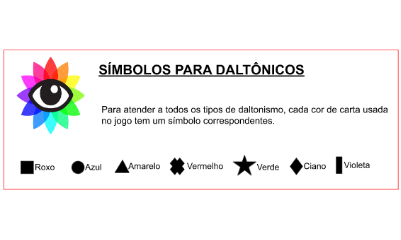

30 minutos para o fim do mundo
Um jogo cooperativo e estratégico onde você e seus amigos trabalham em equipe para salvar ou destruir a humanidade... Qual será o seu destino?

Um jogo cooperativo e estratégico onde você e seus amigos trabalham em equipe para salvar ou destruir a humanidade... Qual será o seu destino?
30 minutos para o fim do mundo é um projeto acadêmico dos estudantes do primeiro semestre de 2023 do curso de Design de Games da faculdade FAM. Este projeto tem por objetivo criar um jogo analógico.
Desta forma, o jogo 30 minutos para o fim do mundo trata-se de um jogo cooperativo estratégico de 5 à 12 jogadores e para maiores de 12 anos de idade. Em suma, no contexto do jogo, você é um dos últimos sobreviventes do planeta Terra, em meio a um cenário de falta de recursos necessários para sobrevivência humana. Na obrigação de dar continuidade a humanidade, você e os sobreviventes ao seu lado se agarram na fagulha de esperança de tentar uma vida nova em outro planeta. Seria um objetivo fácil se todos tivessem essa mesma linha de pensamento, mas existem seres humanos desesperançosos que não acreditam na capacidade humana de se adaptarem aos seus problemas e não sofrerem com os mesmos erros novamente, com isso em mente fazem de tudo para sabotar esse plano e dar fim a raça humana e o pouco espaço que há na nave. Escolhas difíceis terão que ser tomadas, negocie, convença, blefe e manipule se for preciso para atingir seu objetivo.
30 minutos para o fim do mundo foi criado por um grupo de estudantes, que buscou unir elementos de jogos cooperativos e estratégicos em uma experiência única e emocionante. A ideia do jogo foi inspirada principalmente em jogos como The resistence, Coup, Deception e Among Us.
A equipe de criação é formada por:
A maior parte das ilustrações foram feitas pelo Guilherme. O design gráfico do jogo teve participação de toda a equipe, a coordenação foi feita por Laura e Pedro. A baixo estão alguns dos desenhos das cartas.
Cartas de Personagem
Cartas de Recurso
Cartas de Sabotagem
Cartas de Profissões
Cartas de Reparo
Cartas de Evento
As regras de 30 minutos para o fim do mundo são simples e fáceis de aprender, permitindo que os jogadores iniciantes possam rapidamente entrar na ação. No entanto, o jogo também tem profundidade e estratégia suficientes para desafiar jogadores experientes.
As regras do jogo estão disponíveis para download no site:
Acesso as regras30 minutos para o fim do mundo foi projetado para ser acessível a pessoas daltônicas. Além disso, a equipe considerou a opção de colocar as regras em um simulador de libras para deficientes auditivos.
Guia para daltônicos:
Vídeo das regras para deficientes auditivos (feito através do aplicativo vlibras):
Acesso ao video